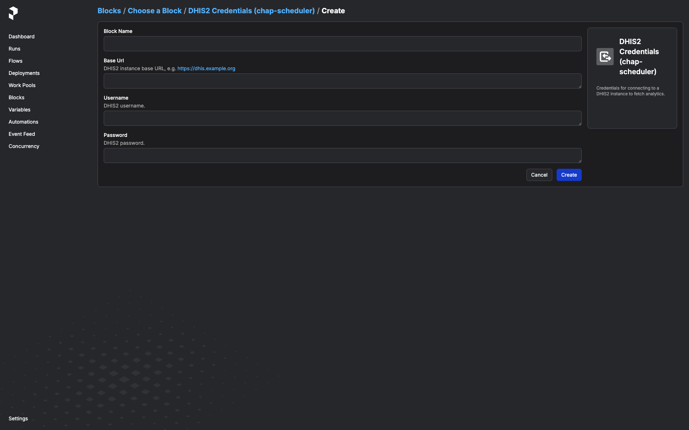
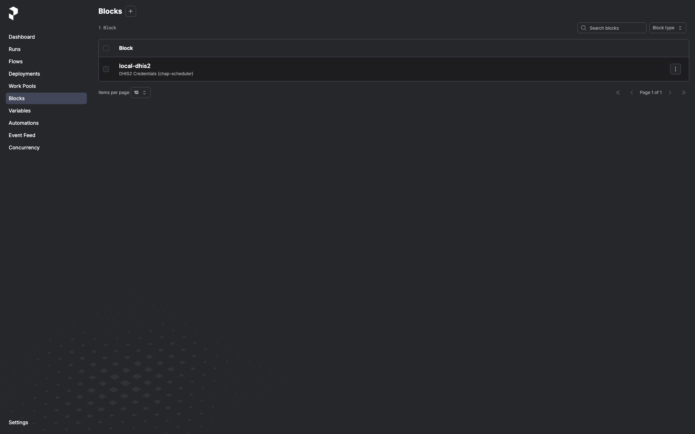
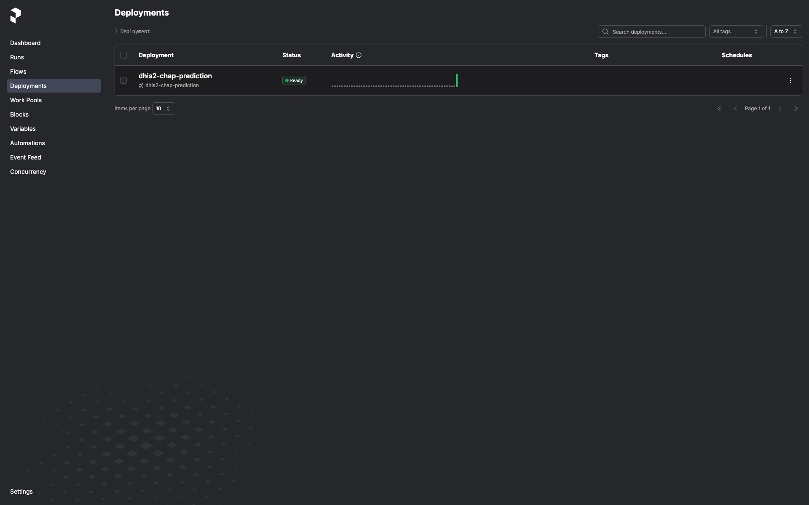
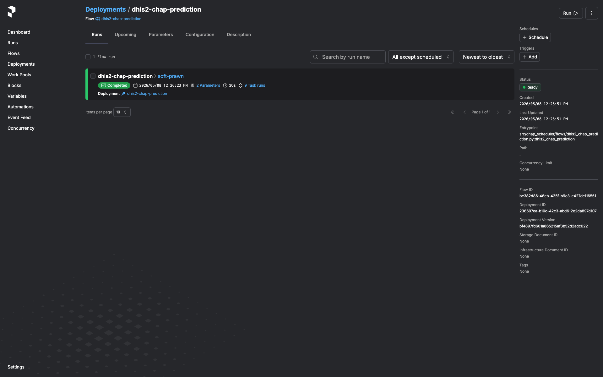
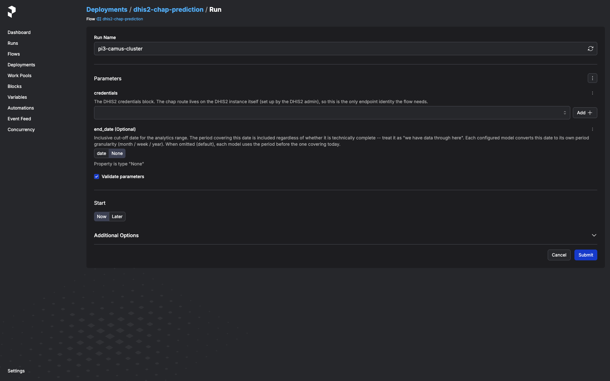
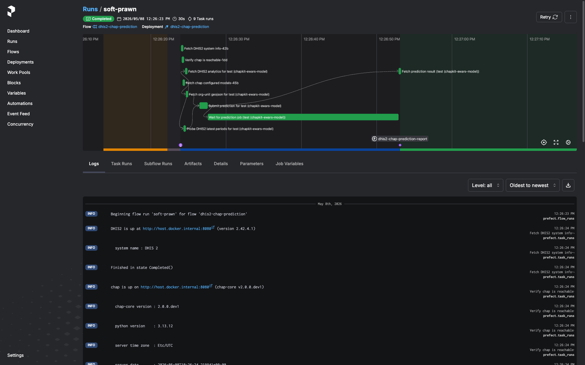
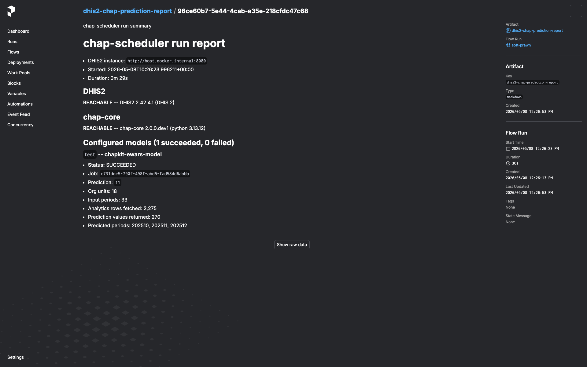
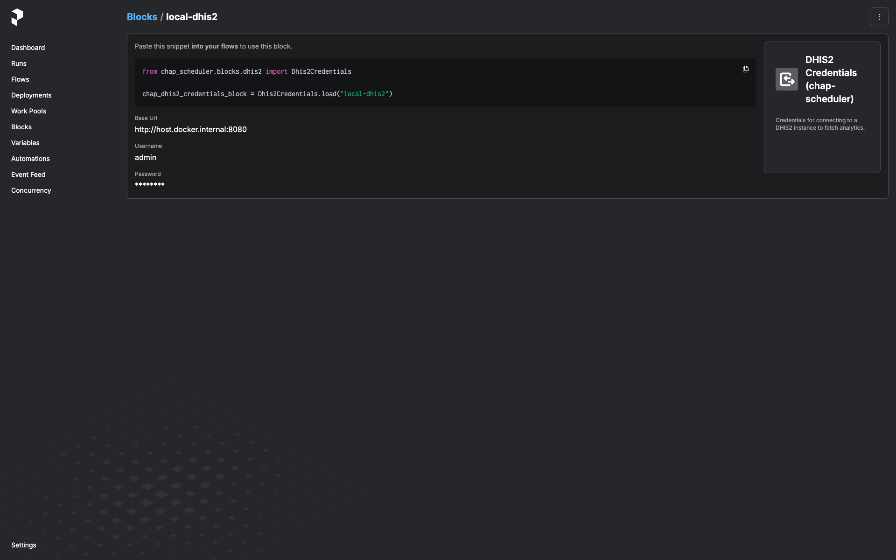

Operations¶
Day-to-day tasks: triggering a run, scheduling, reading the run-report, rotating credentials, and common troubleshooting. For installation and quick-start, see the README.
Before triggering a run¶
The flow needs:
- A DHIS2 instance reachable from the worker container, with the chap
bundle installed and at least one prediction setup registered
(chap UI → create an Evaluation, then deploy it to create a
prediction setup). Setups with
schedule_enabled=falseare reported as SKIPPED on auto runs; pass an explicitprediction_setup_idon the flow trigger to run a disabled setup on demand. -
A
Dhis2Credentialsblock instance for that DHIS2 server. Create one in the Prefect UI:Open http://127.0.0.1:9090/prefect/blocks/catalog → DHIS2 Credentials (chap-scheduler) → + Add → fill in
base_url,username,password→ save with a memorable name likeprod-dhis2.
Once saved, the block instance shows up in the Blocks list and is pickable from any flow that takes a
Dhis2Credentialsparameter:
Trigger a one-off run¶
In the Prefect UI:
-
Deployments → dhis2-chap-prediction.

-
Run → Custom run.

-
Pick the
Dhis2Credentialsblock from the dropdown. - Pick the end-of-window mode in the
end_modedropdown: calculated(default) -- probe DHIS2 for the latest period with full covariate coverage. Ignoresend_dateandend_period_offset.fixed-- pin to the period coveringend_date. Treat the date as "we have data through here". Requiresend_date.offset-- use the periodend_period_offsetsteps back from today (0= current/in-progress,1= last complete, ...). Pure compute, no probe; useful for scheduled runs that want a stable look-back regardless of when DHIS2 last imported. Requiresend_period_offset(>= 0).- (Optional) Set
prediction_setup_idto scope the run to a single prediction-setup row by its id; leave blank to process every setup (default). -
Submit.

The run lands in the run list. Click it to see logs and, once it finishes, the run-report artifact (see next section).

Schedules¶
The flow itself ships without a baked-in schedule (see Architecture for why). Add a cron trigger via the Prefect UI:
- Deployments → dhis2-chap-prediction → Schedules tab → + Add Schedule.
- Pick Cron (or Interval if you prefer), set the cron expression and timezone.
- Click Edit parameters on the schedule and pin the
Dhis2Credentialsblock instance you want this schedule to use. You can add multiple schedules to the same deployment, each with its own block — e.g. nightly against staging, weekly against production.
The schedule will start firing immediately. Disable it from the same UI.
Reading the run-report¶
Every run emits a markdown artifact named dhis2-chap-prediction-report.
Open the run in the Prefect UI → Artifacts tab. The report contains:
- DHIS2 system info (version, server time, instance URL) and chap system info (chap-core version, Python version, server timezone) — pinpoints what the run actually talked to.
- Per-setup section. For each prediction-setup the flow tried:
- Status (
succeeded/failed). - On failure: which step (e.g.
fetch_dhis2_for_setup,run_prediction_setup,wait_for_prediction) and the error message. - For chap rejections (HTTP 400 with structured detail): the
per-
(orgUnit, featureName)"missing values" breakdown grouped by reason and time period. - On success: prediction id, analytics-row count, org-units covered, periods covered, predicted-period list.
- Status (
The artifact is always written, including when DHIS2 or chap was
unreachable end-to-end (you'll see dhis2_error / chap_error set
instead of system info).

Rotating DHIS2 credentials¶
In the Prefect UI: Blocks → click the block → Edit → update
password → save. The next flow run that uses this block picks up the
new value. No service restart, no env-var rewrite.

A flow run that's already in flight keeps the old password — block values are loaded once at the start of the run and held in memory for the duration. If you've rotated because the old password is compromised, cancel any in-flight runs from the Prefect UI and let them re-trigger against the new value.
Deploying beyond loopback¶
The default compose.yml is sized for "run on the operator's laptop".
A few defaults flip from "fine" to "footgun" the moment the stack is
exposed to anything other than localhost — call them out explicitly
before binding to a public interface.
- Prefect UI is unauthenticated. It can read every saved
Dhis2Credentialsblock (passwords are encrypted at rest, but the UI decrypts them to show the Edit form) and trigger flow runs against any of them.compose.ymlbinds to127.0.0.1:9090only. To expose the service, put a reverse proxy with auth (oauth2-proxy, Authelia, Cloudflare Access, …) in front and do not publish 9090 directly. - Postgres password is the literal
prefect. Hard-coded incompose.yml(both on the postgres container and in the chap-scheduler service'sPREFECT_API_DATABASE_CONNECTION_URL). Fine on a loopback-bound stack since the postgres port isn't published — but if you copy this compose file to a shared host, change both occurrences to a real secret and feed them in via env vars or a secrets backend. - No request-size limits on the Prefect API. Whatever Prefect ships by default. If you put a reverse proxy in front, set a sensible client-body limit there too.
Scalability envelope¶
The flow holds the whole input batch in memory for the duration of a run — there's no chunking, no streaming, no preflight cardinality estimate. Per configured model, peak memory is roughly:
- Analytics rows from DHIS2.
(covariates × periods × org_units)rows, each ~250 bytes serialized. A national-scale run with 5 covariates × 60 months × 1,000 org units ≈ 300k rows ≈ 75 MB. - chap request body. The JSON-encoded prediction request (observations + GeoJSON + metadata). Typically 2-3× the analytics-row memory because each observation becomes a small JSON object.
- Org-unit GeoJSON. Usually a few MB even for thousands of org units; not the bottleneck unless geometries are unusually dense.
The compose worker's mem_limit is 2 GiB. Deliberately generous —
typical national-scale runs peak well under 200 MB — but bounded so
the worker fails loud rather than dragging the host into swap.
The flow also caps _PERIOD_ENUMERATION_CAP at 120 periods (~10 years
monthly / ~2 years weekly / 120 years yearly). A configured model that
would walk past the cap raises a validate_period_range failure
rather than silently submitting a truncated range.
If you hit OOMKills (or the run-report's "Analytics rows fetched" is unexpectedly large):
- Check the configured model. A typo in the org-unit list (a country root instead of a leaf set) can multiply the row count by two or three orders of magnitude.
- Pin the end period. Trigger with
end_mode="fixed"+end_dateorend_mode="offset"+end_period_offsetinstead of letting the freshness probe walk back from today; this bounds the period range to what you intended. - Raise
mem_limit. Override the worker'smem_limitin your deployment's compose file. 2 GiB → 4 GiB is usually more than enough. - Split the setup. If a single prediction setup covers a country-scale org-unit list and several years of monthly history, consider splitting the backtest into per-region backtests and deploying each as its own prediction setup on the chap side. Each runs as its own per-setup entry in the same flow run.
A preflight cardinality estimate (probing DHIS2 for the row count before the full fetch) is a roadmap item.
Common troubleshooting¶
"All regions rejected due to missing values" on every model¶
The prediction fired before DHIS2 had data for one or more required
covariates in the most recent period. Check the run-report's rejection
detail — the listed featureName and timePeriods tell you which
covariate is lagging.
If this is chronic for a covariate (typical for climate data lagging the disease-cases pipeline), expect the freshness probe to step the end period back a month or two automatically; the prediction will simply target an earlier window than "today minus one period".
start period after end period¶
The configured model's startPeriod is later than the end period the
flow resolved (via probe, fixed date, or offset). This is a
configuration issue on the chap side — the configured model needs a
startPeriod that's actually before any plausible end period.
Prediction stays in PENDING / RUNNING past the timeout¶
The flow polls chap's job-status endpoint and gives up after
CHAP_SCHEDULER_PREDICTION_TIMEOUT_SECONDS (default in
config.py).
Long-training models may need this raised. Set it in .env or as a
container env var.
Worker registered but no deployment shows up in the UI¶
Check the worker container's logs. flow.serve() registers the
deployment only after the Prefect API is reachable; if the chap-scheduler
service is still starting, the worker retries in a loop. Once
/prefect/api/health returns 200 the deployment will appear.
"Spawning a second Prefect server"¶
If you see Prefect logging "starting ephemeral server" from the API
container's logs, something in the API process is constructing a Prefect
client without PREFECT_API_URL set. This shouldn't happen in the
shipped code — block-type registration is intentionally on the worker
side for exactly this reason. File a bug if you hit it.
CLI reference¶
chap-scheduler --version # version
chap-scheduler info # resolved config (env-driven)
chap-scheduler serve # run the FastAPI server
chap-scheduler register-blocks # register block types against a running API
# (worker container does this automatically;
# use this command if you serve standalone)
All settings come from environment / .env, prefixed with
CHAP_SCHEDULER_. See
.env.example.